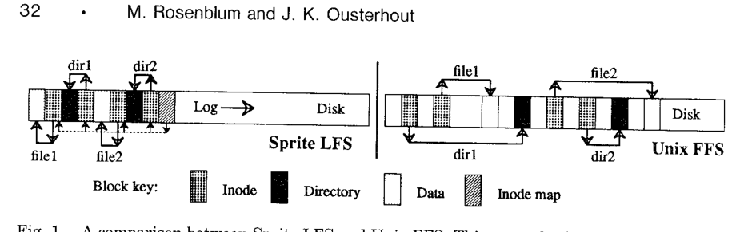
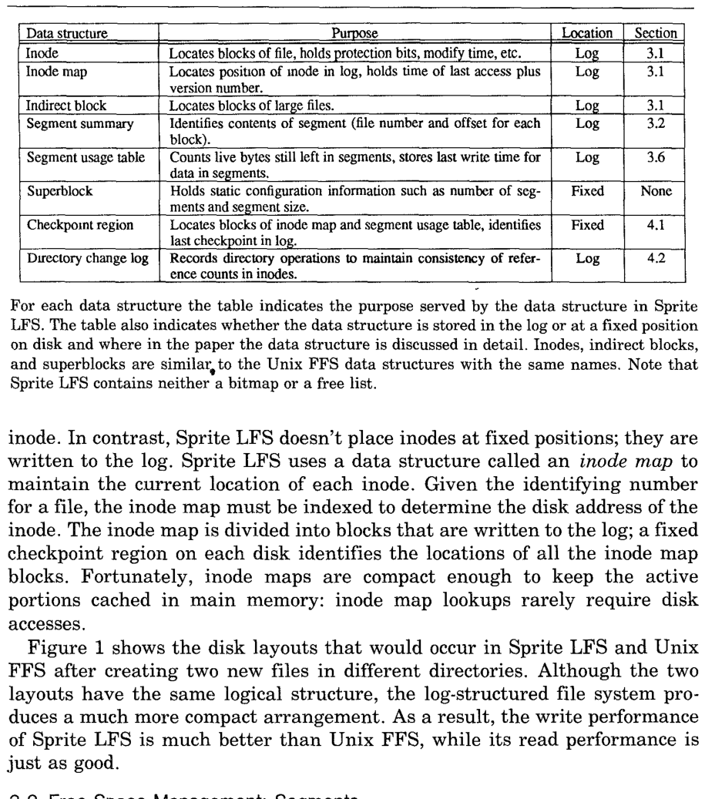
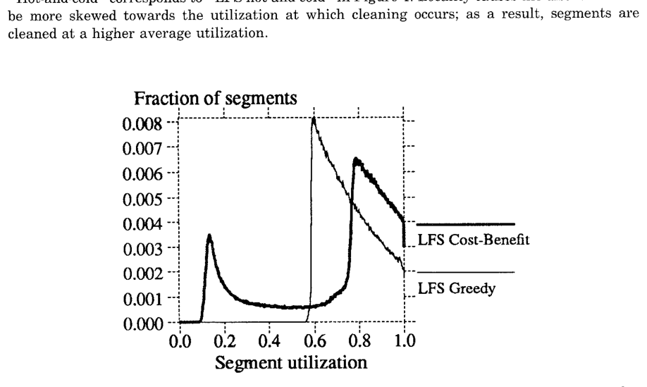
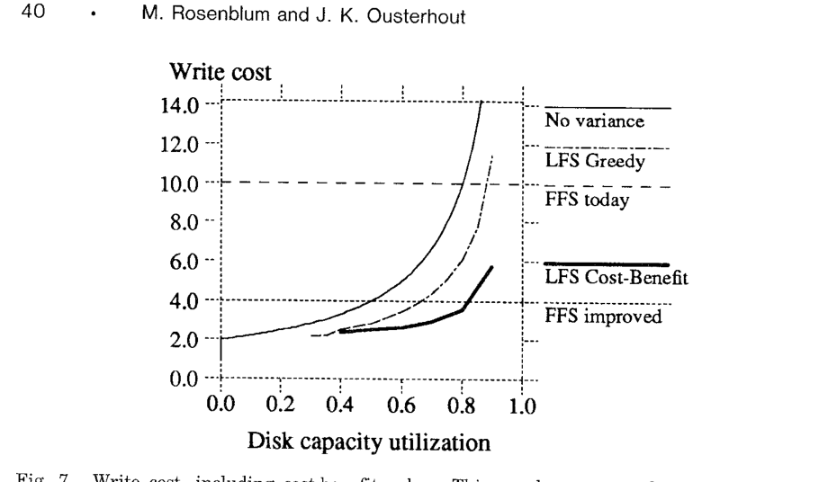
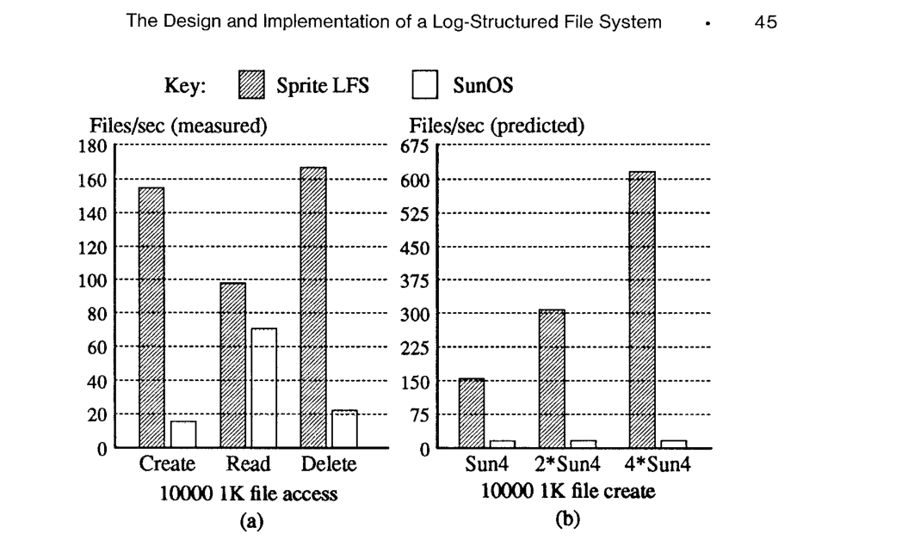
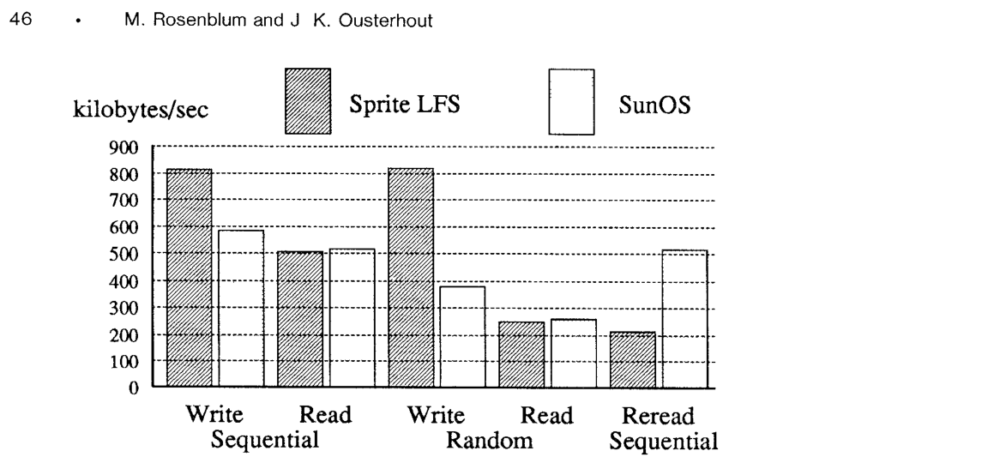
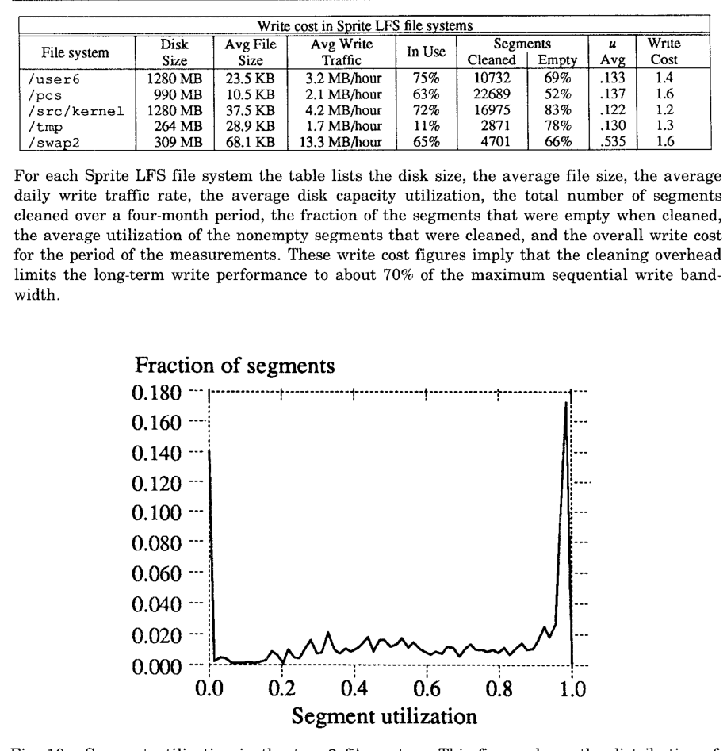
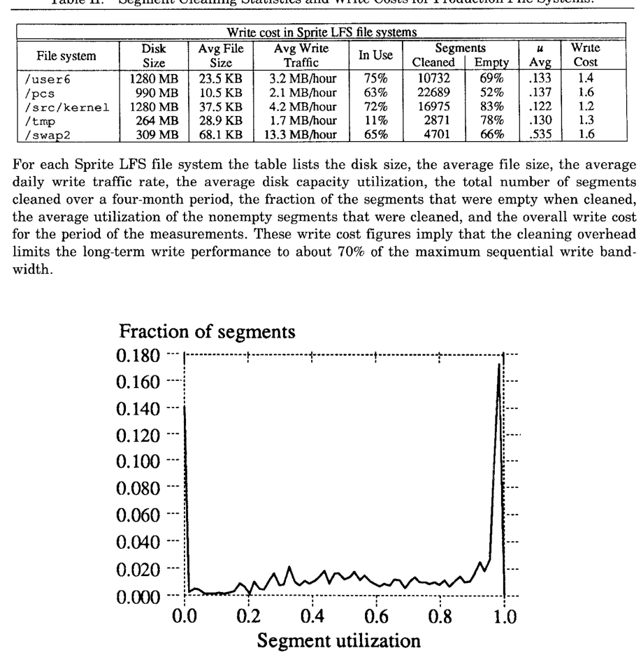
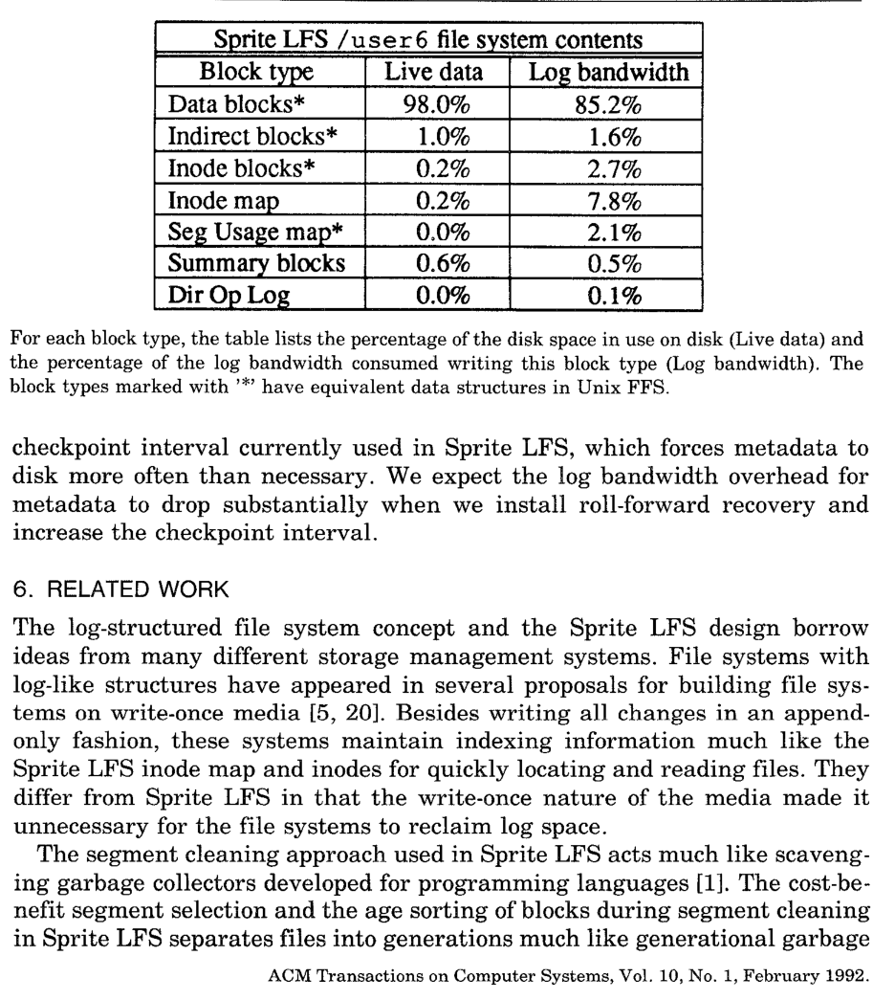

The Design and Implementation of a Log-Structured File System
This page was written by an AI model to give a high-level overview of the paper. Please check the paper for detail.
By the early 1990s, CPU speeds were improving at a nearly exponential rate while disk access times, dominated by mechanical seeks and rotation, were improving only slowly. Growing main memory sizes let file caches absorb more and more of the read traffic, which means disk traffic becomes increasingly dominated by writes. The workloads the authors cared most about, office and engineering environments, are also dominated by small files, and creating or deleting a small file in a conventional Unix file system touches several separate, scattered on-disk structures. Taken together, these trends meant the cost of small, synchronous, randomly placed writes was about to become the bottleneck for an increasing fraction of computing.
The Berkeley Unix fast file system (Unix FFS) lays each file's own data out sequentially, but it physically separates different files, and separates a file's inode and directory entry from its data and from each other. Creating one small file needs at least five non-sequential disk writes, two of them to the same inode, and several of these metadata writes happen synchronously, so the application stalls on the disk instead of overlapping work with a faster CPU. Measured, Unix FFS can use only 5–10% of a disk's raw bandwidth writing new data for small-file workloads; the rest of the time is spent seeking. Logging file systems that existed at the time (the paper cites Cedar and Episode) only used the log as a temporary staging area; the permanent home for data was still a conventional randomly placed layout, so they kept much of the same placement cost.
The paper's proposal is a log-structured file system (LFS): buffer a sequence of file system changes, of every kind, in the in-memory file cache, then write all of them to disk in one large, purely sequential append to a log. The log is the only structure on disk; there is no separate data area that it feeds into. To avoid sacrificing read performance for this write speedup, the log also carries index structures, an inode map plus ordinary inodes and indirect blocks, so that reading a file costs the same number of disk operations in the log-structured design as in Unix FFS.
Because the log eventually wraps around the disk, free space inevitably fragments as files are overwritten or deleted. Sprite LFS reclaims it with segment cleaning: the disk is divided into large, fixed-size segments; a cleaner reads a batch of old segments, identifies which of their blocks are still referenced using per-segment summary information, and rewrites just the live blocks compactly into fewer clean segments, freeing the rest for reuse. Which segments to clean, and how to group the live data when rewriting it, turn out to be the decisions that determine performance; simulation led the authors to a cost-benefit policy that treats long-lived ("cold") data differently from frequently rewritten ("hot") data during cleaning.
The prototype, Sprite LFS, was built for the Sprite network operating system and measured against SunOS 4.0.3 on identical hardware. It created, read, and deleted 10,000 one-kilobyte files almost ten times faster than SunOS for the create and delete phases, while matching or beating SunOS on large sequential and random writes and on most reads. In production use on five file systems over several months, cleaning overhead left an overall write cost of only 1.2 to 1.6, meaning Sprite LFS could devote roughly 65–75% of the disk's raw bandwidth to writing new data, versus the 5–10% typical of Unix FFS.

Key takeaways
- LFS turns many small, synchronous, scattered writes into large sequential log appends, by buffering changes in memory and flushing them together.
- The log is the only on-disk structure; an inode map (itself stored in the log) lets Sprite LFS locate any inode with the same read cost as Unix FFS, so writes get faster without reads getting slower.
- Free space is reclaimed by segment cleaning: segments are read, live blocks are identified via segment summary blocks, and live data is rewritten compactly, freeing segments for reuse.
- The dominant design choice is which segments to clean. A naive "clean the least-utilized segment" policy performs worse under locality; a cost-benefit policy that favors cleaning stable, highly-utilized "cold" segments over volatile, lightly-utilized "hot" ones cuts write cost by up to 50% in simulation.
- Checkpoints (periodic consistent snapshots of file system state) plus roll-forward (replaying the log since the last checkpoint) give crash recovery that scans only the recent tail of the log, not the whole disk.
From scattered writes to a sequential log
Why Unix FFS falls short, how Sprite LFS writes and reads the log, how it reclaims free space, and how it recovers from crashes.
1 · Technology and workload trends behind the design
The paper identifies three technology trends. Processor speed was increasing at a nearly exponential rate and was expected to keep doing so through the 1990s. Disk access time, gated by mechanical seek and rotation, was improving much more slowly than disk capacity or cost; disk arrays could raise transfer bandwidth, but nothing on the horizon would meaningfully shrink seek time. Main memory size was also growing exponentially, which has two effects: larger file caches absorb a growing fraction of read requests, shifting disk traffic toward writes, and those caches can double as write buffers, collecting many modified blocks before any of them reach disk (at the cost of losing more data in a crash, which the paper accepts for infrequent crashes).
On the workload side, office and engineering environments are dominated by small files, often just a few kilobytes on average; their create and delete times are dominated by updates to file system metadata. Workloads dominated by large sequential files (the paper mentions supercomputing) pose different problems that existing layout techniques already handle well, so the design deliberately optimizes for small-file efficiency while aiming not to regress large-file performance.
2 · Why Unix FFS struggles with this workload
Unix FFS lays out each file's own data sequentially, but it physically separates different files from each other, and separates each file's inode (attributes) and its containing directory's data and inode from the file's own data. Creating a single new file requires at least five non-sequential disk writes, each preceded by a seek: two writes to the file's inode (written twice to ease crash recovery), one to the file's data, one to the directory's data, and one to the directory's own inode. For small-file workloads this leaves less than 5% of the disk's potential bandwidth used for new data; the rest goes to seeking.
The second problem is that Unix FFS writes file data blocks asynchronously but metadata (directories, inodes) synchronously. For workloads with many small files, disk traffic is dominated by these synchronous metadata writes, which couples the application's performance directly to the disk's and prevents it from benefiting from a faster CPU or from using the cache as a write buffer. Network file systems like NFS had, at the time, introduced additional synchronous behavior to simplify their own crash recovery, further hurting write performance.
3 · The log-structured idea: writing once, reading randomly

The basic idea is to accumulate a sequence of file system changes, of every kind, in the file cache and write all of them to disk in a single large, sequential operation. Sprite LFS's goal was to do this without sacrificing random-access read performance. Its indexing structures mirror Unix FFS's: each file has an inode holding its attributes plus the disk addresses of its first ten blocks, and files larger than ten blocks also have one or more indirect blocks pointing to further data or indirect blocks. The difference is that inodes are no longer at fixed disk locations; they are written wherever they fall in the log. An inode map tracks the current log location of every file's inode. The inode map itself is divided into blocks that are written to the log, with a fixed on-disk checkpoint region recording where its current blocks are. In practice the active part of the inode map stays cached in memory, so looking it up rarely costs a disk access, and once a file's inode is found, reading the rest of the file costs exactly as many disk operations as in Unix FFS.
4 · Free space management: threading, copying, and segments
The hardest design problem is keeping large free extents available for sequential writing as the log wraps around the disk. Two pure strategies both fail on their own:
- Threading: leave live data in place and thread the log through the gaps left by deleted or overwritten data. This avoids copying but lets free space fragment into many small, unusable extents, eventually degrading to the same performance as a conventional file system.
- Copying: read out the live data from a region and rewrite it compactly elsewhere, leaving one large contiguous free extent. This keeps free space usable, but it is expensive: in the simplest circular-log scheme, every long-lived file would have to be recopied on every pass of the log across the disk.
Sprite LFS combines both at a coarse grain. The disk is divided into large, fixed-size segments (512 KB or 1 MB in Sprite LFS). Any given segment is always written sequentially from beginning to end, and all live data must be copied out of a segment before it can be rewritten, so cleaning works by copying. But the log as a whole is threaded segment by segment: a segment that happens to hold only stable, long-lived data can simply be skipped and left alone rather than needlessly recopied. Segments are made large enough that the time to read or write a whole segment greatly exceeds the seek time to its start, so whole-segment operations run near the disk's full bandwidth regardless of which segments are involved.
5 · Segment cleaning: finding and copying live data
Segment cleaning is a three-step process: read a number of segments into memory, identify which blocks are still live, and write the live blocks back out to a smaller number of clean segments; the segments that were read can then be reused.
- Each segment carries one or more segment summary blocks that record, for every piece of data in the segment, which file and which offset within that file it belongs to (multiple summary blocks occur when more than one log write was needed to fill the segment).
- To check liveness, the cleaner looks up the file's inode (or indirect block) to see whether its pointer for that offset still points at this exact block. If so, the block is live; if not, it is dead and can be discarded.
- An optimization avoids even that lookup in the common case: each file has a version number in its inode map entry, incremented whenever the file is deleted or truncated to zero length. The inode number plus version number form a unique identifier (uid), which the segment summary records for each block; if that uid no longer matches the uid currently in the inode map, the block can be discarded immediately.
6 · Write cost: why segment utilization is everything
The paper measures cleaning efficiency with write cost: the average disk time spent per byte of new data written, including all cleaning overhead, expressed as a multiple of the time an ideal, overhead-free sequential write would take. A write cost of 1.0 is perfect (full disk bandwidth, no cleaning); Unix FFS on small-file workloads has a write cost of 10–20 (using 5–10% of bandwidth for new data), and the paper estimates that an improved Unix FFS using logging and disk-request sorting could reach a write cost of about 4 (around 25% of bandwidth).
To regenerate one clean segment, the cleaner reads N segments in their entirety and writes back N·u segments of live data, creating N·(1−u) segments of new free space; dividing total bytes moved by new bytes written gives the formula above. It follows that segments must be cleaned at a utilization below 0.8 for a log-structured file system to beat Unix FFS today, and below 0.5 to beat an improved Unix FFS. Crucially, this utilization is not the overall disk capacity utilization; it is just the fraction of live blocks in the particular segments chosen for cleaning, which the cleaner can try to keep low even when the disk overall is fairly full.
7 · From greedy to cost-benefit cleaning
The authors built a simulator that overwrites one of a fixed set of 4-kilobyte files at each step, either uniformly at random or with a "hot-and-cold" pattern (10% of files, selected 90% of the time; the remaining 90% of files selected only 10% of the time). With a simple greedy policy, always cleaning the least-utilized segment, uniform random access already did better than the write-cost formula alone would predict, because variance in segment utilization lets the cleaner pick unusually empty segments; at 75% overall disk utilization, the segments actually cleaned averaged only 55% utilization.
Adding locality (the hot-and-cold pattern) to the same greedy policy, counterintuitively, made performance worse, not better. Under greedy cleaning every segment's utilization eventually drifts down to the cleaning threshold, including cold segments, but a cold segment's utilization drops extremely slowly, so it lingers near the threshold for a very long time, tying up free blocks the file system cannot yet reach. More locality meant more segments clustering near the cleaning point rather than at the empty end of the distribution.
The resulting cost-benefit policy ranks segments by estimated benefit over cost, using the age of a segment's most recently written block as a proxy for how long its free space is likely to stay free:


Simulated under the hot-and-cold pattern with blocks also sorted by age before being rewritten, this policy produced the hoped-for bimodal distribution of segment utilizations: cold segments were cleaned at around 75% utilization, while hot segments were left alone until they decayed to around 15% utilization, since most writes (90%) target hot files anyway. This reduced write cost by as much as 50% compared to the greedy policy and let a log-structured file system beat the best possible Unix FFS even at relatively high disk capacity utilizations. Results for the real system are covered in the Evaluation tab.
8 · The segment usage table
To support cost-benefit cleaning, Sprite LFS maintains a segment usage table recording, for each segment, the number of live bytes it still holds and the modification time of its most recently written block. Both values are set when a segment is written; the live-byte count is decremented as files are deleted or blocks are overwritten, and a segment whose count reaches zero can be reused without being cleaned at all. The table's own blocks are written to the log, with their addresses stored in the checkpoint regions described next. At the time of the paper, Sprite LFS tracked a single modification time per file rather than per block, which is imprecise for files not modified in their entirety; the authors note plans to record per-block times instead.
9 · Crash recovery: checkpoints and roll-forward
Because the most recently written data sits at the very end of the log, Sprite LFS can recover without the full-disk scan that traditional Unix file systems (via fsck) require after a crash. Recovery uses two mechanisms:
- Checkpoints mark a position in the log where all file structures are consistent and complete. A checkpoint writes out all modified data, inodes, indirect blocks, inode map blocks, and segment usage table blocks to the log, then writes a checkpoint region to a fixed disk location containing the addresses of all current inode map and segment usage table blocks, the current time, and a pointer to the last segment written. Two checkpoint regions are kept, used alternately, so a crash mid-checkpoint cannot corrupt both; on reboot the system reads both and uses the one with the more recent valid time.
- Roll-forward recovers data written after the last checkpoint by scanning forward through the log segments written since then, using segment summary information to find new inodes and incorporate their data blocks into the recovered inode map. Data blocks found without a corresponding new inode are assumed incomplete and ignored. Roll-forward also adjusts the segment usage table's live-byte counts to reflect deletions, overwrites, and the newly recovered data.
- A separate directory operation log handles the case where a crash lands between writing an inode's updated reference count and writing the corresponding directory entry (or vice versa). Each directory change (create, link, rename, unlink) is logged with the operation, the affected directory entry's location and contents, and the inode's new reference count, always before the corresponding inode or directory block. During roll-forward this log is used to complete any operation only half-reflected on disk; it also makes rename atomic as a side effect.
Sprite LFS's checkpointing and roll-forward code is, in the authors' assessment, no more complex than the fsck consistency-checking code it replaces, while also eliminating the free-block bitmap and layout-policy code that Unix FFS needs. Measured recovery times are covered in the Evaluation tab.
Evaluation
Micro-benchmarks against SunOS, several months of production cleaning statistics, and crash-recovery timing.
Micro-benchmarks compared the prototype, Sprite LFS, against SunOS 4.0.3 (Unix FFS) on identical hardware. Production statistics were gathered from five Sprite LFS file systems in everyday use by about thirty users over a four-month period.
| What | Value in the paper |
|---|---|
| Hardware | Sun-4/260 (8.7 integer SPECmarks), 32 MB memory, Sun SCSI3 HBA, Wren IV disk (1.3 MB/s max transfer bandwidth, 17.5 ms average seek) |
| Configuration | ~300 MB usable file system; SunOS used 8 KB blocks, Sprite LFS used 4 KB blocks and 1 MB segments; no cleaning occurred during micro-benchmark runs (write cost 1.0, best case) |
| Workloads | 10,000 1 KB file create/read/delete; 100 MB file sequential write/read, random write/read, sequential reread; modified Andrew benchmark; 4 months of production use on 5 file systems (home directories, project area, kernel sources, swap files, tmp); synthetic crash recovery of 1/10/50 MB of fixed-size files |
| Baseline | SunOS 4.0.3 (Unix FFS) |
| Metrics | files/sec and bandwidth (KB/s); write cost (disk traffic / new-data traffic) and fraction of cleaned segments that were empty; recovery time in seconds; percentage of live data and log bandwidth by block type |
Small-file create and delete: almost an order of magnitude faster than SunOS

What it shows. Fig. 8(a) creates 10,000 one-kilobyte files, reads them back in creation order, then deletes them, plotting files/sec for each phase on both systems. Sprite LFS is almost ten times as fast as SunOS for create and delete, and also faster for the read-back, since the log packs the files densely and they are read in the same order they were created. During the create phase, Sprite LFS kept the disk only 17% busy while the CPU was saturated; SunOS kept the disk busy 85% of the time even though only about 1.2% of its potential bandwidth went to new data. Fig. 8(b) projects files/sec for creation on faster CPUs with the same disk: Sprite LFS should scale up by another 4–6× as CPUs improve, since it is CPU-bound, while SunOS should see almost no improvement, since it is disk-bound.
What to take from it. The gap reflects a structural difference, not a one-time tuning win: Unix FFS's cost is dominated by seeks for synchronous metadata writes, a cost that does not shrink with faster CPUs, while Sprite LFS's cost is dominated by CPU work and so benefits directly from CPU improvements. This measurement reflects best-case performance with no cleaning overhead (write cost 1.0).
Large files: higher write bandwidth throughout, with one exception

What it shows. A benchmark creates a 100 MB file with sequential writes, reads it back sequentially, writes 100 MB randomly into the existing file, reads 100 MB randomly, then rereads the file sequentially. Fig. 9 plots bandwidth (KB/s) for each of the five phases. Sprite LFS has higher write bandwidth in every phase: substantially higher for random writes, which it turns into sequential log writes, and also higher for sequential writes, because it groups many blocks into one large I/O where the SunOS version tested issued one I/O per block. Random-read bandwidth is similar on both systems. The exception is sequential rereading of a file immediately after it was written randomly: Sprite LFS is markedly slower there, because that read now requires seeks through the log.
What to take from it. The paper frames this as a difference in the kind of locality each system optimizes for. Unix FFS pays extra at write time to preserve logical locality (fast sequential reads regardless of write order); Sprite LFS gets temporal locality for free (data written together lands together). The two coincide for the common case of sequential write followed by sequential read, and diverge only when writes are randomly ordered but reads are not.
Production cleaning overhead is lower than simulation predicted

What it shows. Table II reports, for five production Sprite LFS file systems monitored over four months, disk size, average file size, average write traffic, overall disk capacity utilization, number of segments cleaned, the fraction of cleaned segments that were totally empty, average utilization of the nonempty cleaned segments, and resulting write cost. Across the five systems, overall disk utilization ranged from 11% to 75%, more than half of all segments cleaned were totally empty, and measured write costs ranged from 1.2 to 1.6. For /swap2 specifically (309 MB, 68.1 KB average file size, 13.3 MB/hour average write traffic, 65% disk utilization), 4701 segments were cleaned, 66% of them totally empty, the nonempty ones averaging 53.5% utilization, with an overall write cost of 1.6.
What to take from it. A write cost of 1.2–1.6 means Sprite LFS devoted roughly 65–75% of raw disk bandwidth to new writes in sustained production use, matching the paper's headline comparison against Unix FFS's 5–10%. The authors attribute the gap from the earlier simulation (write costs of 2.5–3 at similar utilizations) to two simplifications in the simulator: real files are often much longer than one block and get written or deleted as a whole, which can empty an entire segment outright, and real cold files are written far less often than the simulation's cold group, letting Sprite LFS isolate them in segments that are essentially never cleaned.
Segment utilizations really do cluster into two groups

What it shows. Fig. 10 plots the distribution of segment utilizations from a snapshot of the production /user6 disk: the fraction of segments at each utilization level. The distribution shows large numbers of segments at or near full utilization alongside large numbers of totally empty segments, with relatively few in between.
What to take from it. This is direct evidence, from a real deployed system, of the bimodal distribution the cost-benefit cleaning policy was designed to produce in simulation (Figs. 6–7, discussed in the How It Works tab): stable, nearly-full segments are not worth cleaning, while the comparatively few empty segments are the cleaner's own output, cheap to reuse.
Crash recovery time tracks file count, not data volume
What it shows. Table III reports recovery time for synthetic crash scenarios that vary file size (1 KB, 10 KB, 100 KB) and total data recovered via roll-forward (1 MB, 10 MB, 50 MB), using an infinite checkpoint interval so all test data had to be recovered by roll-forward alone. For 1 KB files, recovering 1 MB, 10 MB, and 50 MB took 1, 21, and 132 seconds; for 10 KB files, under 1, 3, and 17 seconds; for 100 KB files, under 1, 1, and 8 seconds.
What to take from it. Recovery time is dominated by the number of files being re-inserted into the inode map and directory structure, not the number of bytes recovered, since smaller files mean more of them for the same data volume. Using Table II's average file sizes and write traffic, the paper estimates an hour-long checkpoint interval would yield roughly one second of average recovery time, and at the maximum observed production write rate (150 MB/hour), worst-case recovery time grows by about one second per 70 seconds of checkpoint interval. At the time of measurement, the production system used a 30-second checkpoint interval and discarded everything after the last checkpoint on reboot; roll-forward itself had not yet been installed in production.
Metadata is a small share of live data, a larger share of log traffic

What it shows. Table IV breaks down, for /user6, the percentage of on-disk live data versus log write bandwidth by block type: data blocks, 98.0% of live data and 85.2% of log bandwidth; indirect blocks, 1.0% of live data and 1.6% of log bandwidth; inode blocks, 0.2% of live data and 2.7% of log bandwidth. In the accompanying text, the paper adds that inodes, inode map blocks, and segment usage table blocks together account for about 13% of all data written to the log, with the inode map alone accounting for more than 7%.
What to take from it. File data and indirect blocks make up essentially all (99%) of the live bytes on disk, but small, frequently rewritten metadata consumes a disproportionate share of write bandwidth, since it gets overwritten and re-logged on every change. The paper attributes much of this to the short, 30-second checkpoint interval in production, which forces metadata to disk more often than necessary, and expects metadata's log-bandwidth share to drop once roll-forward recovery lets the checkpoint interval be lengthened.
FAQ
Q·What does "log-structured" mean here, as opposed to systems that just use a write-ahead log?▾
In a log-structured file system, the log is the only permanent on-disk structure; there is no separate, randomly placed data area that the log merely feeds into. Prior logging file systems the paper cites (Cedar, Episode) and database write-ahead logs use the log only for temporary staging: once logged changes are applied to their permanent location, the log entries can be discarded. Sprite LFS never copies data out of the log into some other structure; a block's position in the log is its permanent address until segment cleaning moves it.
Q·If file caches absorb most reads, why does disk layout still matter?▾
Because writes still have to reach disk for durability, and growing caches shift the disk's workload to be dominated by writes rather than reads. The design targets exactly that shifted workload: once reads are mostly satisfied from memory, the remaining disk-bound cost is how efficiently writes are laid out, which is precisely where scattered Unix FFS placement is weak.
Q·There's no fixed inode location, so how does Sprite LFS find a file's inode?▾
Through the inode map, which records each file's current log location. The inode map's own blocks are written to the log, and a fixed checkpoint region on disk records where the current inode map blocks are. In practice the active part of the inode map stays cached in memory, so lookups rarely cost a disk access.
Q·What's the difference between threading and copying free space, and why use both?▾
Threading leaves live data in place and links the log around the gaps left by deleted or overwritten data; copying reads out live data and rewrites it compactly elsewhere, leaving a large contiguous free extent. Pure threading lets free space fragment uselessly; pure copying forces even long-lived files to be recopied repeatedly. Sprite LFS copies within segments (compacting each segment's live data) but threads the log segment-by-segment, so a segment holding only stable data can be skipped instead of needlessly recopied.
Q·Without a free-block bitmap, how does cleaning know which blocks are still live?▾
Each segment carries segment summary blocks recording which file and offset each block belongs to. Cleaning checks whether the file's inode (or indirect block) still points at that exact block. An optimization using a per-file version number, combined with the inode number into a unique id (uid), lets the cleaner discard a block immediately if its uid no longer matches the one in the current inode map, without consulting the inode at all.
Q·Why did adding locality make the simple greedy cleaner perform worse, not better?▾
Under greedy cleaning (always clean the least-utilized segment), every segment's utilization eventually drifts down to the cleaning threshold, including cold segments. A cold segment's utilization drops extremely slowly, so it lingers near the threshold for a long time, tying up free blocks the system cannot yet reach. More locality meant more segments clustering in this unproductive zone rather than at the fully-empty end of the distribution.
Q·How does the cost-benefit policy fix that?▾
It ranks segments by (free space reclaimed × estimated time that space stays free) divided by cleaning cost, using the age of a segment's most recently written block as the stability estimate. Cold segments become worth cleaning even at high utilization (around 75% in the paper's simulation), while hot segments are left alone until they decay much further (around 15%), since their reclaimed space would refragment almost immediately anyway.
Q·What does a "write cost" of, say, 1.6 actually mean?▾
It is the ratio of total disk traffic, including cleaning, to bytes of genuinely new data written, against an ideal of 1.0 (no cleaning overhead). A write cost of 1.6 means roughly 1/1.6 ≈ 63% of the disk's raw bandwidth is available for new writes (this summary's arithmetic). The paper states the production range as 1.2 to 1.6, and separately states this corresponds to about 65–75% usable write bandwidth.
Q·How does crash recovery avoid scanning the whole disk, like fsck?▾
Because the most recently written data sits at the end of the log, recovery only needs to look there. A checkpoint periodically records a known-consistent snapshot of file system state; after a crash, recovery loads the most recent valid checkpoint, then scans forward through just the log segments written since (roll-forward), using segment summary information to bring the recovered state up to date.
Q·Why is there a separate directory operation log on top of checkpoints and roll-forward?▾
Because a crash can land between writing an inode's updated reference count and writing its corresponding directory entry (or vice versa). Sprite LFS logs a record of every directory change before the corresponding inode or directory block is written, so roll-forward can finish any operation only half-reflected on disk; this also makes rename atomic as a side effect.
Q·How does this compare to database write-ahead logging?▾
Both treat the log as the authoritative record of recent changes and use a checkpoint-plus-redo recovery scheme. The key difference is that database systems keep a separate data area as the final home for data, so the log is only temporary staging that can be compacted once applied; Sprite LFS has no separate data area, so segment cleaning is required, not optional, for the file system to ever reuse disk space.
Q·Did the real system behave like the simulation predicted?▾
Better. Measured production write costs (1.2–1.6) were substantially lower than the simulation's prediction (2.5–3) at comparable disk utilization, which the paper attributes to real files often spanning multiple blocks and being deleted as a whole, and to real cold files being written far less often than the simulation's simplified cold-file group.
Q·Is log-structured design still relevant today, with SSDs instead of spinning disks?▾
The paper itself is entirely about mechanical disks and does not discuss flash. (general knowledge) The core idea, never overwrite in place, append sequentially, and run a background process that identifies live data and repacks it using a cost/benefit tradeoff, is widely regarded as a direct ancestor of flash SSD flash-translation-layer garbage collection and of log-structured merge trees used in many modern key-value stores.